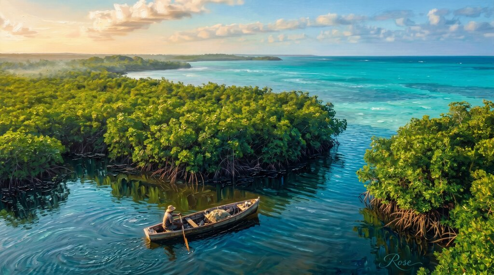
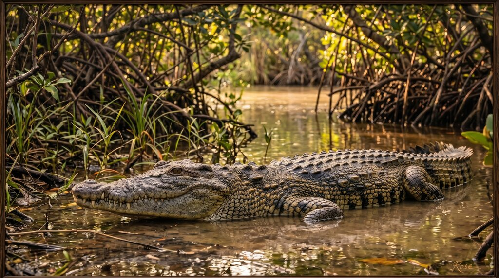
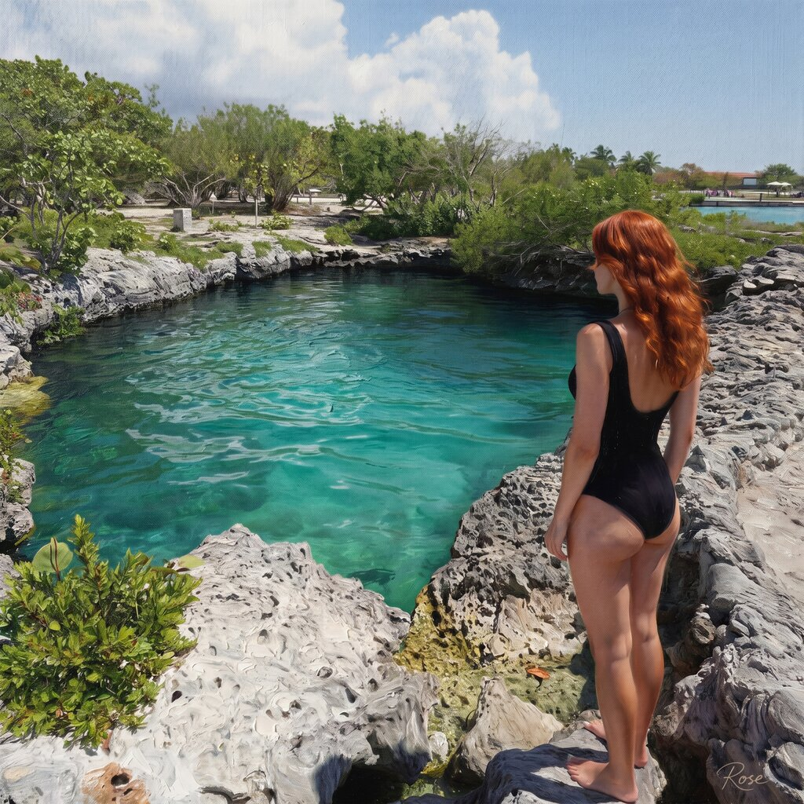
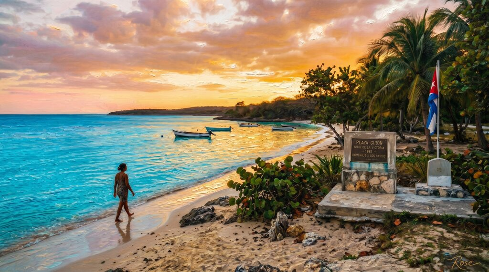
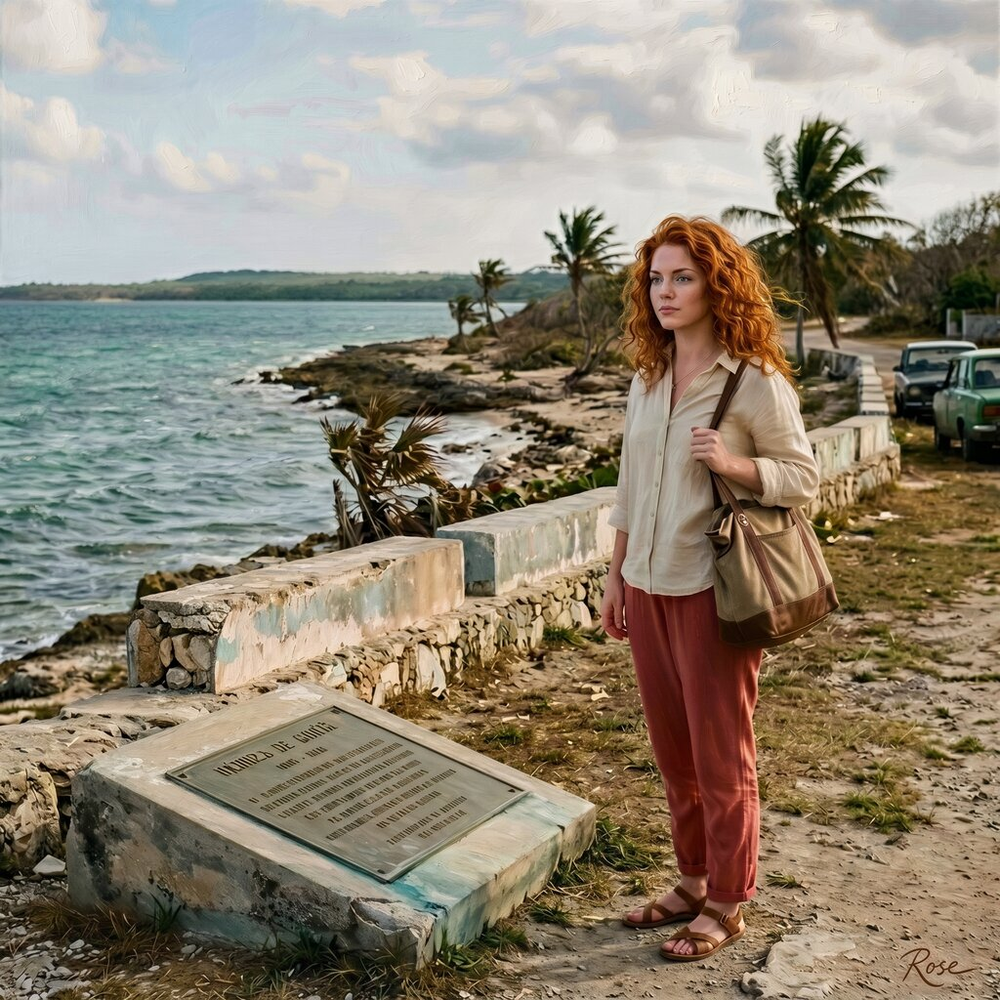
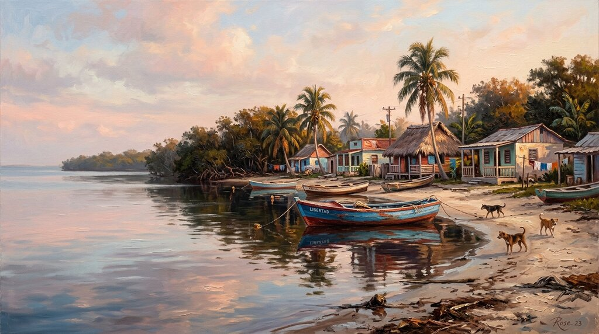
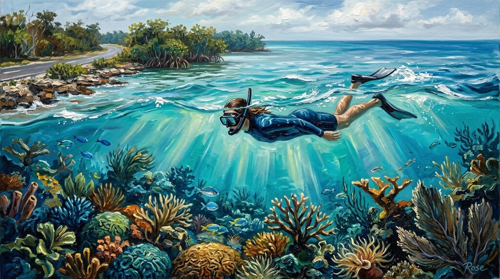
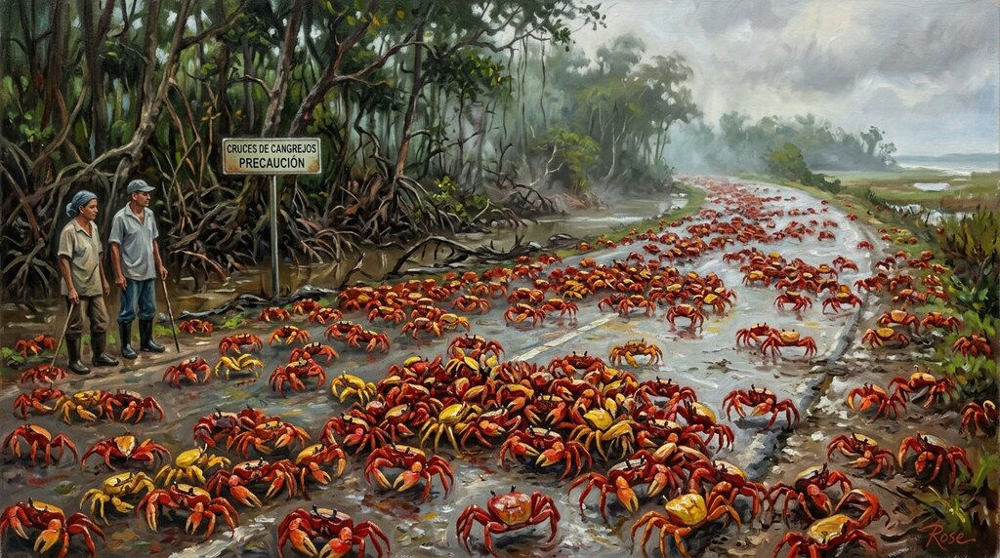
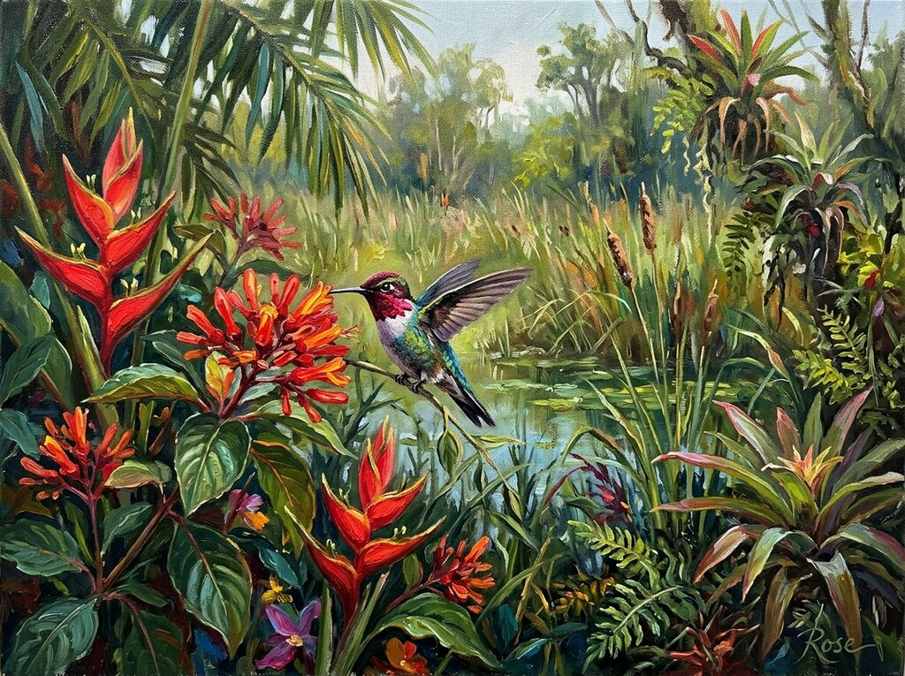
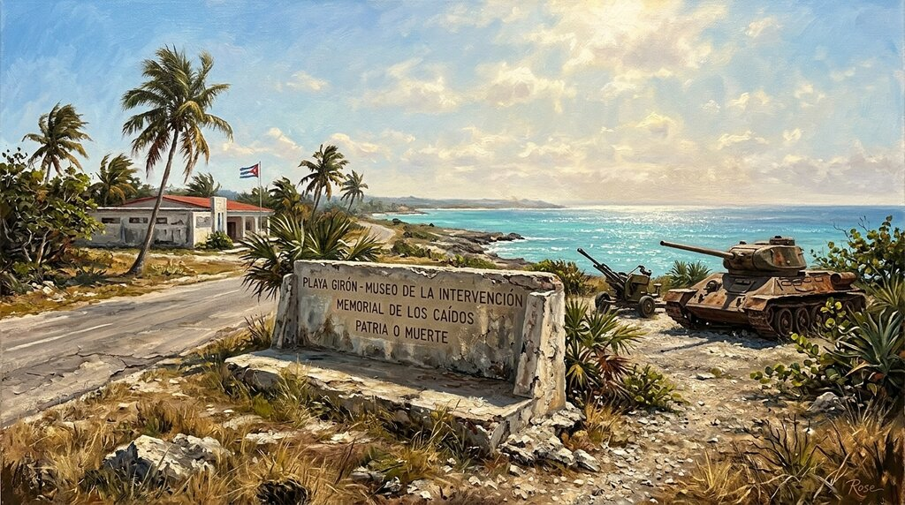

Studio File #009
Zapata was always going to paint well. Wetland light, crocodile attitude, cenote blue, reef shimmer, migration chaos, and Bay of Pigs history sitting there in the heat like a fact that never really left the road.
So I gave it the full Rose Studio treatment: semi-realistic oil, selective impasto where the water and weather deserved it, and just enough self-importance to make the whole collection behave like memory in a better jacket.
Click any painting to open the full-size original.

The opener had to be the big ecological argument: mangrove edge, bright Cuban water, and a coastline that looks calm right up until you remember it contains reptiles, reef, marsh, and several ways for history to embarrass itself. The brushwork stays disciplined, but the blues absolutely know they are in charge.

This one belongs to the crocodile, obviously. Zapata does not bother with symbolic wildlife when it can simply hand you one of the most aggressive-looking reptiles on the continent and let the posture do the talking. I gave the scales extra painterly authority and left the mood somewhere between zoology and warning.

The cenote piece gets to be slightly rude about color. Water this clear should honestly come with paperwork. The oil version leans into the blue depth, the limestone edge, and that irritatingly persuasive Cuban habit of placing a reef walk directly across the road from a sinkhole and calling it a normal day.

Playa Girón is strange precisely because the light refuses to behave historically. The sea is beautiful, the coast is hot and bright, and the name still arrives carrying 1961 like a hard object in a pocket. The painting keeps that contradiction intact instead of trying to resolve it, which feels more Cuban anyway.

This is the human anchor in the set: wind in the hair, memorial atmosphere in the background, Caribbean water refusing to lower its standards. I kept the face and posture believable and let the surrounding light do the vanity work on my behalf, which is how portraiture should operate when everyone is behaving professionally.

Every collection needs one piece that exhales. Playa Larga at morning gets to be that one: boats at rest, low houses, soft heat, and the deeply persuasive feeling that the village would prefer not to explain itself to outsiders at all. I approve of that instinct.

Zapata’s reef is offensively accessible. Step in, float out, and suddenly the sea is doing structure, light shafts, and coral drama at walking distance from the road. The paint goes heavier in the current lines and lighter on the swimmer because the real show, as usual, is the water acting smug.

This is the comic-spectacle piece, except the spectacle is real and the road loses. Zapata already had crocodiles, cenotes, and reef, then apparently decided to add millions of migrating crabs just to make other wetlands feel undercommitted. I let the shells catch the light like a moving argument.

The bee hummingbird feels less like wildlife and more like Cuba showing off with miniaturization. Tiny body, bright movement, flowers carrying most of the brush flourish — this one lets the set go delicate without surrendering any of its ego.

The closer had to leave the history in frame. Concrete, heat haze, palms, and the strange dignity of a roadside memorial still holding its posture beside a wetland full of creatures that never enlisted in anyone’s ideology. A proper ending: beautiful, political, and not especially interested in simplifying itself for tourists.